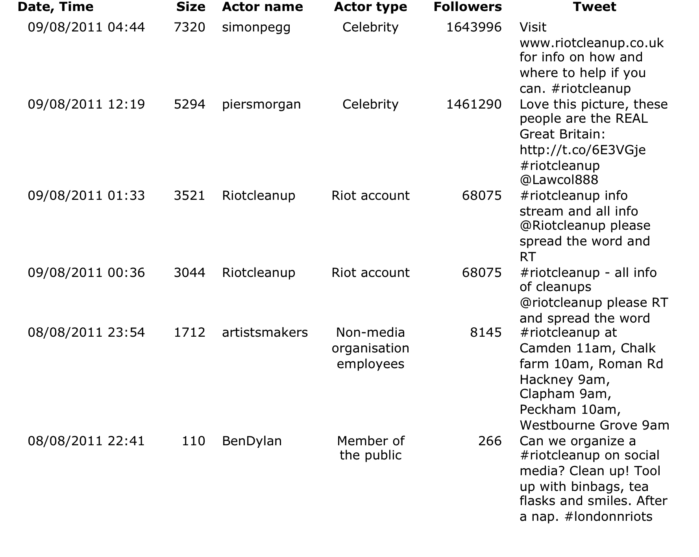
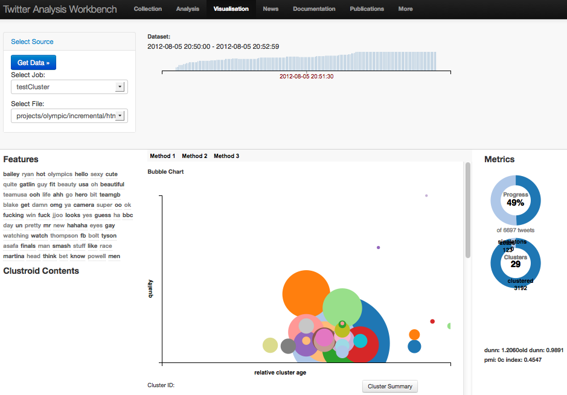
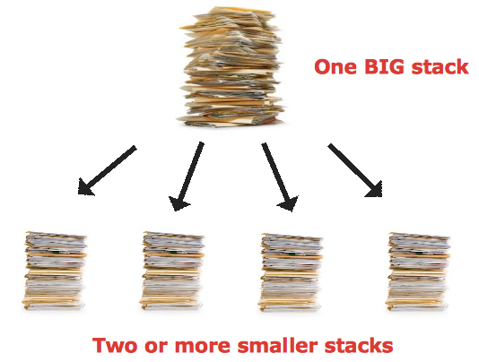
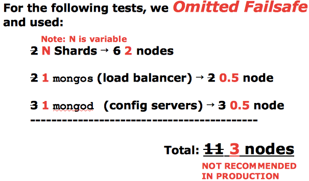
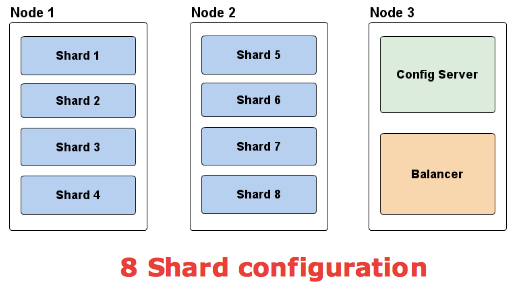
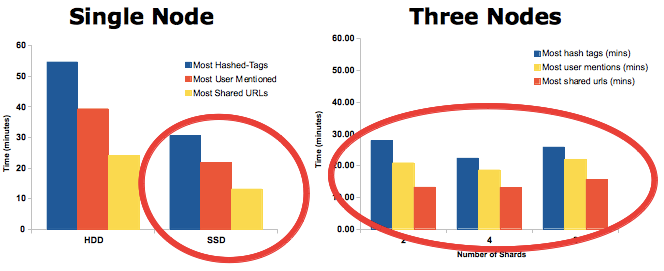
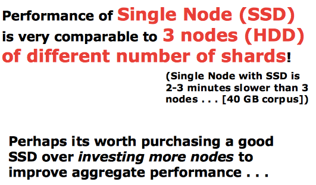
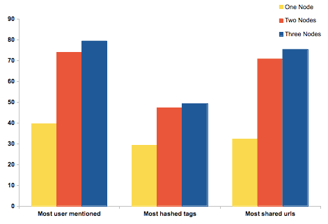

Twirp: A Twitter Mining Workbench and experiences with NoSQL Databases
By Chris Choi and Alex Voss
University of St Andrews
Overview
- Motivation towards Twitter
- Twirp the Twitter Mining Workbench
- Experiences with NoSQL Databases
- Ways forward
Motivation
Twitter Tweets allows us to:
- Gain insights into people's behaviours
- Predict the future - Educated guess
- Turn back time and see the history of opinions
Motivation
Conventional methods of media analysis are inadequate in the face of
Big Data
Motivation
327,000 Tweets per Second!
Case Study: London Riots
August 2011
Case Study: London Riots
How did it start?
Case Study: London Riots
- Obtained 2.6 Million Tweets from Twitter
- 700,000 individual accounts
Case Study: London Riots
What the data tells us is:
- Reactions to events (specific or general)
- Information Flow
- How Twitter is used to inform, organise, etc. For example:
- Police response
- Public perception of the Police
Case Study: London Riots
We combined Computational and Qualitative Methods in ways that are complementary to their respective strengths
Case Study: London Riots

Twirp: A Twitter Mining Workbench
Goals
- Obtain data from Twitter with ease
- Group a tweet and its retweets into information flows
- Rank information flows to determine relative significance
- Visualize data in a social network graph
- Useful tool for researchers to conduct analysis on social data
Twirp: A Twitter Mining Workbench
Problems still to be resolved:
- Natural Language Processing (NLP) due to lack of context, such as:
- Sentiment Analysis
- Topic Analysis
- Big Data: how NoSQL database can be used to manage Big Data
Twirp: A Twitter Mining Workbench
In Development

Experiences with NoSQL Databases
In developing Twirp, we are currently investigating NoSQL databases to:
- Store
- Query
- Perform Simple Analytics
On Twitter Tweets
Experiences with NoSQL Databases
In particular:
Experiences with NoSQL Databases
Reason:
Because they are both Document Oriented Databases that store data in JSON format
Experiences with NoSQL Databases
Database Tests: Simple Aggregations
- Most used Hashtags
- Most Mentioned Users
- Most Shared URLs
Scaling Horizontally
Sharding

Scaling Horizontally
Sharding with MongoDB
But Shard Deployment is a Problem with MongoDB
Scaling Horizontally
Sharding with MongoDB
Scaling Horizontally
Sharding with MongoDB
That's 11 Machines to split data into two!
Scaling Horizontally
Sharding with MongoDB

Scaling Horizontally
Sharding with MongoDB: Deployment Example

Scaling Horizontally
Sharding with MongoDB: Results

Scaling Horizontally
Sharding with MongoDB: Results

Scaling Horizontally
Sharding with MongoDB: Results

Scaling Horizontally
Sharding with Couchbase: Results

Scaling Horizontally
Sharding with Couchbase: Results
Couchbase performance disappointing, hence we focused more on MongoDB
Scaling Summary
So the question is:
Should you scale horizontally? or vertically?
Scaling Summary
Additionally . . .
Most algorithms are not compatible with MapReduce, meaning NoSQL databases such as Hadoop, MongoDB and Couchbase, may not be the best choice for analytics
To Recap on Everthing
- We are working on Twirp (Twitter Mining workbench)
- If your datasize is < 1TB, it is better scale vertically/li>
- Not all analytical algorithms can be mapped onto a MapReduce query (used by most NoSQL databases to perform analytics)
Thank you!
Chris Choi (University of St Andrews)
Alex Voss (University of St Andrews)
View this presentation again on:
chutsu.github.com/presentations/isgc-2013